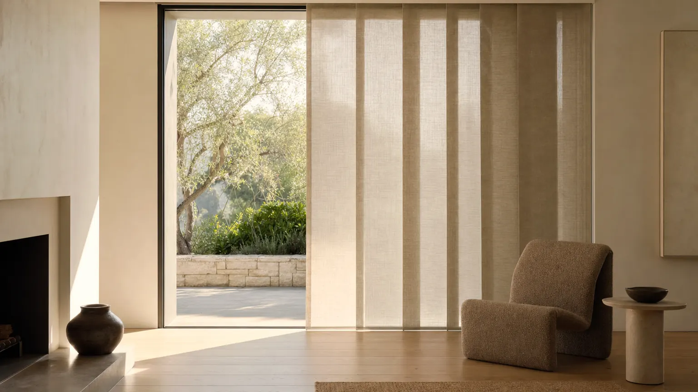

Home/Shop by need/Cover a patio door
Need · Patio doors
Cover the glass and still walk through it.
A patio door is not a big window. It is a door, and whatever you fit has to move out of the way several times a day without being fought with.

How it works
The mechanism, before the products.
Decide the stack side before anything else
Vanes have to gather somewhere. Stack them on the fixed panel, not the one that opens, or you will be pushing fabric aside every time you go outside. Left, right and split centre are all available, and it is a manufacturing choice, not an adjustment.
Measure the handle, not just the opening
A slider handle projects into the room. A treatment that hangs flat against the glass will foul it. Mount off the ceiling or far enough up the wall that the vanes clear the handle through its whole travel.
Rotate first, traverse second
The reason vane systems beat a single wide shade here is that you get two moves. Rotate for light and privacy without opening anything; traverse only when you actually want to walk through. A roller gives you one move: up or down.
Ceiling or wall, not inside the opening
Both DualDrape™ and vertical blinds mount to the ceiling or the wall above the door. That is deliberate: an inside mount on a door opening puts the track where the door needs to be.
Before you order
Order up to eight free swatches and tape them to the glass at the hour the problem actually happens. It is the only test that settles this.
Order free samplesWhat we would fit
Three that actually work.
Ranked, with the downside written next to each one.
Drapery look, vane behaviour
A 3 1/2" fabric vane on a low-profile track: it reads like a soft curtain, rotates for light and traverses aside for access. Widths run 36" to 192", which covers almost any residential slider in one unit.
The tradeoff. The most expensive of the three, and the vanes are fabric, so a doorway that takes wet dogs and bikes is asking a lot of them. They are removable and washable, which helps.
DualDrape™The value answer that has not been beaten
A 3 1/2" vinyl or S-curve louvre rotating and drawing on a cordless wand, to 144" wide. Vinyl wipes clean, individual vanes are replaceable for a few dollars, and nothing else costs less per square foot of door.
The tradeoff. It looks like what it is. Fabric vanes soften it, but if the door is the focal point of the room, DualDrape™ is the one you will be happier with in five years.
Vertical BlindsA screen over a door you rarely use
On a French door pair or a slider that is mostly a window, a single wide solar screen at 5% or 10% keeps the view and kills the afternoon glare, with no vanes to gather.
The tradeoff. One roller reaches 108" and it has to come all the way up to walk through. Fine on a door you use twice a week, wrong on the one you use twice an hour.
Roller & SolarPublished ranges
The numbers, for the three lines above.
| Line | Width | Height | Opacity or material | Mount |
|---|---|---|---|---|
| DualDrape™ | 36" to 192" | 36" to 120" | Light filtering, room darkening | Ceiling or wall mount |
| Vertical Blinds | 24" to 144" | 36" to 108" | Vinyl, fabric, S-curve vinyl | Ceiling or wall mount |
| Roller & Solar | 20" to 108" | 24" to 120" | Solar screen, light filtering, blackout | — |
Straight answer
What will not get you there.
The range has eight lines. Some of them are the wrong answer here, and it is cheaper to read that than to return an order.
- Cellular or roman shades over a working slider. They have to be fully raised to pass, and the stack sits where the door head is.
- Shutters on a sliding door. Bypass shutter panels exist for wide openings, but they need track depth and they will not clear a projecting slider handle.
- An inside mount on any door opening. The track belongs on the ceiling or the wall above.
- A split-centre stack on a door with one fixed panel and one slider. Stack it all onto the fixed side.
Rooms
Where this matters most.


Questions
Asked and answered.
What is the best window covering for a sliding glass door?
A vane system, because it gives you two independent moves: rotate for light, traverse for access. DualDrape™ if you want it to look like drapery, vertical blinds if you want the lowest cost per square foot. Both mount above the opening and stack to one side.
Which side should the vanes stack on?
The fixed panel. Work out which half of the door actually slides, then stack away from it. Split centre only makes sense on a door where both panels open or where the door is purely decorative.
How wide can you go in one unit?
DualDrape™ runs to 192" and vertical blinds to 144". A single roller shade tops out at 108", so a wider opening needs two rollers coupled, which leaves a visible seam.
Will it clear the door handle?
Only if you mount it high enough or far enough off the wall. Measure the handle projection and the height of its travel before you order, and use the measuring guide outside-mount method rather than the inside-mount one.
Can a patio door treatment be motorised?
Yes on DualDrape™, with TruQuiet™. On a wide run it is worth it: a 16-foot traverse is a long way to walk a wand, and a rechargeable motor removes the one job people stop doing after a month.
Configure it at The Home Depot.
Every line on this page is sold and configured at The Home Depot, at the same published sizes and opacities we list here.
Configure size, opacity and lift on Home Depot. Veneta helps you decide before you buy.